NEWS
実行委員が当日までの出来事などをレポートしていきます!
文化祭当日![9/17,9/18]
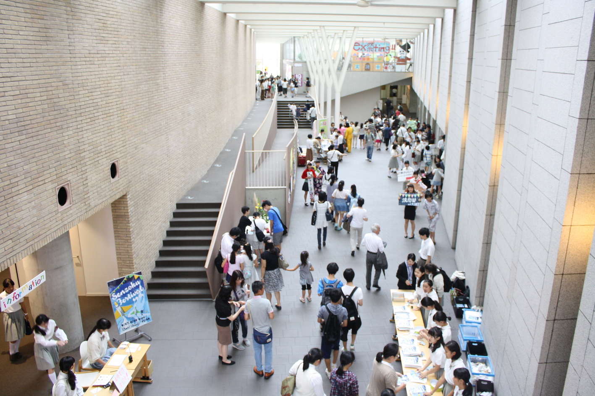
 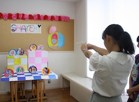
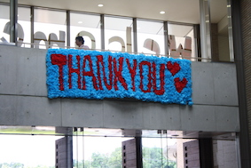
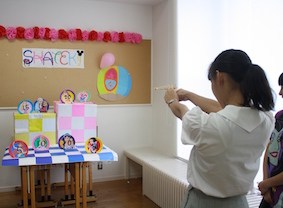
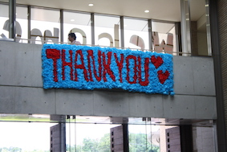
文化祭当日！二日間合わせて来場者数18000人を記録しました。ご来場ありがとうございました！
＜受賞団体＞
展示部門 最優秀賞：高1F「STAR WARS ~Episode S1F~」 優秀賞：書道部「翼鱗」
中3B「<君は金メダルを取れるか?!> オリンBック」
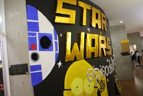飲食部門 最優秀賞：高2A「Amazing食パンウーマン」 優秀賞：高2C「C'mores」
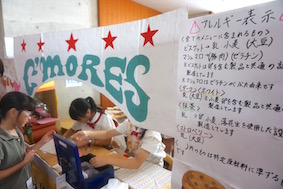公演部門 最優秀賞：合唱部「Sing-along Wizard 〜はじまりのオズ〜」 優秀賞：弦楽合奏部「GUTs」
お客様投票賞：吹奏楽部「"VIVID SHOW" Now on stage!」,「VIVID PARADE」
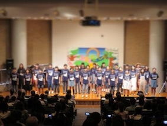受賞した団体の皆さん、本当におめでとうございます！
後夜祭！


 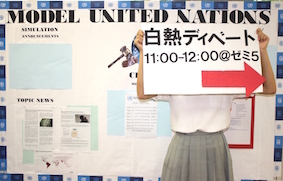
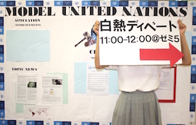

文化祭準備最終日! 本番まであと1日!
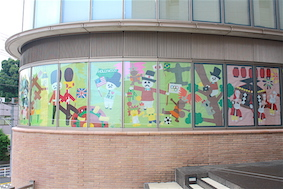洗足祭では生徒のマザーがバザーを行います。毎年手作りの可愛い小物がたくさんあります！（左） JRCとは「Junior Red Cross」の略で、青少年赤十字を意味しています。JRC同好会では発展途上国の女性を支援するチャリティー商品を販売しています！（中） 洗足学園の正面にある校長室の窓の装飾は特に力を入れています！ご来場の際にはぜひご覧ください。洗足祭オリジナルキャラクターのS爺もたくさん登場します！(笑)（右）
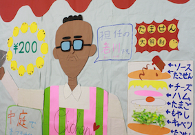高2は毎年飲食の販売を行っています。6クラス全てが厳しい審査を経て、一生懸命作っています! 甘いものからB級グルメまで様々な食べ物があるので、ぜひ食べに来て下さい! 詳しくは コチラ!!

今日はたくさんの部活が文化祭前最後のリハーサルを行っていました。その中のダンス部と軽音部のリハーサルの様子です。
ダンス部は毎年迫力のあるパフォーマンスで観客を魅了しています！「90人の半年間の集大成を見逃すな！最高の舞台をお見せします！」(左)
軽音部は生徒だけではなく、なんと先生までもがライブを行います! オール先生バンドが組まれるのは今年が初めてなので、ぜひご覧下さい! いつもは見ることのできない先生方の新たな一面が見れるかも!? (笑)(右)
[お知らせ]
▶︎スタンプラリーの商品

スタンプラリーでスタンプを７個全て集めた人には洗足祭オリジナル缶バッジをプレゼント!
頑張って探してみて下さい!
▶︎MUSEについて
大学のカフェテリアMUSEにておにぎり、マフィン、牛丼など様々な食事の販売を行っております。
休憩スペースもございますので、ぜひご利用ください。
文化祭準備4日目！本番まであと2日！[9/15]
生徒会役員はこの腕章をつけています。学校に関する質問などございましたら、気軽にお声掛けください！（左）
中3と高1はお化け屋敷やゲームなど、クラス単位で出し物を行います。壁の装飾に力を入れているので注目です！（右）
書道部は音楽に合わせて書道パフォーマンスを行います。最後の最後まで何が描かれているかわからないのでワクワクすること間違いないです！「なかなか見れないと思うのでぜひ！」新体操部はボールやリボン、フープなどを使ってカラフルなパフォーマンスをお届けします。「輝く部員の姿をご覧あれ！」
[お知らせ]
文化祭パンフレットには掲載されていないのですが、模擬国連同好会&ディベート部、美化委員による活動を紹介します。
▶︎模擬国連同好会&ディベート部
模擬国連に関するクイズ大会と栄光学園との招待試合をセミナールーム5にて行います！気軽にお越しください！
[1日目] 1:00〜2:00 クイズ大会
[2日目] 11:00〜12:00 栄光学園との招待試合
▶︎美化委員：
中1Fにて、中学生以下15人限定でエコキャンドル作りの体験を行います。見学だけでも大丈夫なので、
是非お越しください！
[1日目・2日目] 11:15〜12:05
文化祭準備3日目！本番まであと3日！[9/14]

中１は世界の様々な国の紹介をする世界一周旅行、中２は夏休みに参加したボランティアについての発表をどちらも学年単位で行います。模造紙にてたくさん展示します。来てくれた方にはプレゼントがあるかも!?（左）
装飾部門は窓に貼る大きなポスターを作成中です!(右)


弦楽合奏部、合唱部、吹奏楽部マーチング、軽音楽部のリハーサルの様子です。弦楽合奏部はレストランのイメージで美味しい演奏を振舞います。テーマのGUTS(熱意)を持って頑張ります! 合唱部はその綺麗な歌声でミュージカルを披露します。みんなに歌の魔法をかけちゃうぞ♪

吹奏楽部のマーチングはとても有名です。たったの30分ですが後悔はさせません! 吹奏楽部のひと夏がつまった演技をご覧あれ! 軽音楽部は野外でもライブがあります! 部長に一言お願いしたら「ライブ来てくれよな!!!」と言って去って行きました。さすが軽音、イケメンですね。(笑)
各部オリジナルのTシャツにも注目してください!
文化祭準備2日目！[9/13]


文化祭実行委員には専用のパーカーがあります！当日もこのパーカーをきている生徒を見かけたらなんでもお聞きください！
本番まであと3日、全力で頑張ります！(^^)


茶道部と演劇部のリハーサルの様子です。茶道部では美味しい和菓子と一緒に一休みできる空間で優美な浴衣姿の部員たちがおもてなしをしてくれます。演劇部は”夢から醒めた夢”というミュージカルをやります。ミュージカルは演劇部としては初の試みだそうです！公演中、もしかしたらおばけに会えるかも！？お楽しみに！
文化祭準備初日！[9/12]
今日は全校生徒にパンフレットとチケットが配られました!去年までのチケットとは違い、今年はデザインが変わりました。
実行委員やボランティアのみんなで黙々とひもを通す作業は気が遠くなりそうでした。ありがとう！
明日もよろしくお願いします！まだ準備期間１日目、文化祭当日まで気を抜かず、各学年頑張って行きましょう！

 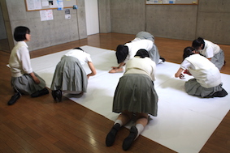
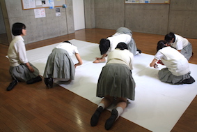